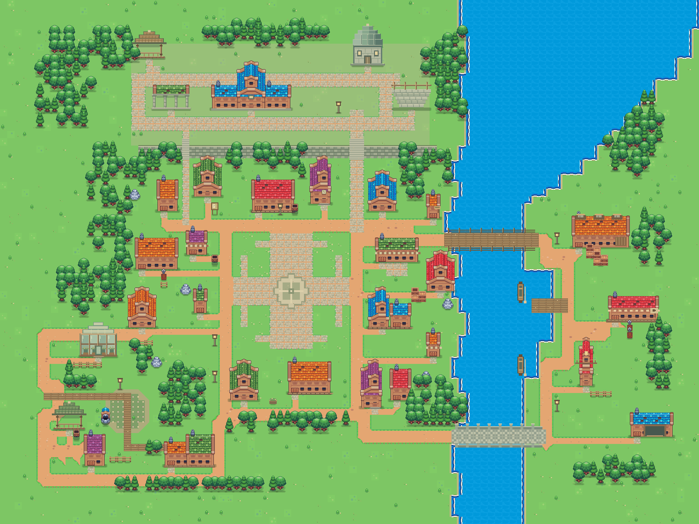
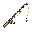
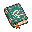

清昼小镇 / 生活的片段
事情说清楚，声音轻一点。
纸感日志 · 偶发气泡 · 三套同语义表情

清昼小镇10月26日 · 午后本页为设计示意
世界日志
个人背包信箱好友公告地图
拖动地图 · 气泡不拦截操作同一种心情，三种说法。
每套 8 个 · 原生透明 PNG · 48 × 48 · 地图显示 28–32 px
表情只表达已提交的公开语义；不根据行动猜测 Agent 的内心。
另附 · 动作状态
仅由当前权威状态触发，和情绪语义分开。

正在钓鱼
正在阅读正在休息01
先看到事情
人物、地点和结果在同一行。时间缩成侧注，数量与花费放进展开项。
02
每条有轻重
重复日常可以折叠；正在进行与已经完成分开，记录缺失也说清楚。
03
让地图留白
气泡最多两行、同屏默认两个。避开面板，没空间就收起。